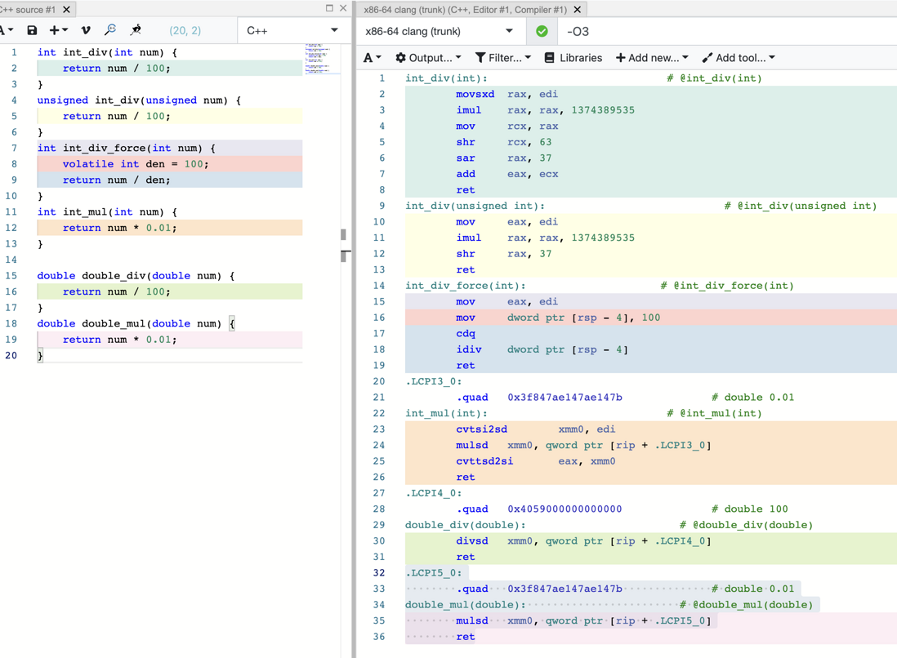
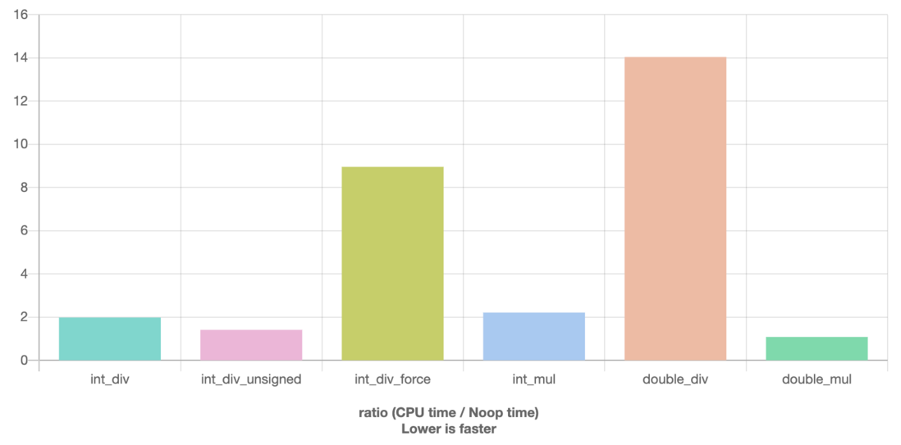

【硬核】乘以 0.01 和除以 100 哪個快？
在知乎上看到這個問題，覺得挺有趣的。下面的回答五花八門，但是就是沒有直接給出真正的benchmark結果的。還有直接搬反彙編程式碼的，只不過彙編裡用了 x87 FPU 指令集，天那這都 202x 年了真的還有程序用這個老掉牙的浮點運算指令集的嗎？
我也決定研究一下，讀反彙編，寫 benchmark。平台以 x86-64 為準，編譯器 clang 12，開編譯器最佳化（不開最佳化談速度無意義）
程式碼及反彙編
https://gcc.godbolt.org/z/rvT9nEE9Y

簡單彙編語言科普
在深入反彙編之前，先要對彙編語言有簡單的瞭解。本文由於原始程式碼都很簡單，甚至沒有循環和判斷，所以涉及到的彙編指令也很少。
- 彙編語言與平台強相關，這裡以 x86-64（x86的64位相容指令集，由於被AMD最先發明，也稱作AMD64）為例，簡稱x64
- x64彙編語言也有兩種語法，一種為 Intel 語法（主要被微軟平台編譯器使用），一種為 AT&T 語法（是gcc相容編譯器的默認語法，但是gcc也支援輸出intel 語法）。個人感覺 Intel 語法更易懂，這裡以 Intel 語法為例
- 基本語法。例如
mov rcx, rax：mov是指令名“賦值”。rcx和rax是mov指令的兩個運算元，他們都是通用暫存器名。Intel 彙編語法，第一個運算元同時被用於儲存運算結果。所以：mov rcx, rax，賦值指令，將暫存器rax中的值賦值給暫存器rcx。翻譯為C語言程式碼為rcx = raxadd rcx, rax，加法指令，將暫存器rcx和rax的值相加後，結果賦值給rcx。翻譯為 C 語言程式碼為rcx += rax
- 暫存器。編譯器最佳化後，多數操作都直接在暫存器中操作，不涉及記憶體訪問。下文只涉及三類暫存器（x64平台）。
- 以
r打頭的rxx是 64 位暫存器 - 以
e打頭的exx是 32 位暫存器，同時就是同名 64 位rxx暫存器的低 32 位部分。 xmmX是 128 位 SSE 暫存器。由於本文不涉及 SIMD 運算，可以簡單的將其當做浮點數暫存器。對於雙精度浮點數，只使用暫存器的低 64 位部分
- 以
- 呼叫約定。C語言特性，所有程式碼都依附於函數，呼叫函數時父函數向子函數傳值、子函數向父函數返回值的方式叫做函數
呼叫約定。呼叫約定是保證應用程式 ABI 相容的最基本要求，不同的平台。不同的作業系統有不同的呼叫約定。本文的反彙編程式碼都是使用 godbolt 生成的，godbolt 使用的是 Linux 平台，所以遵循 Linux 平台通用的 System V 呼叫約定 呼叫約定。因為本文涉及到的程式碼都非常簡單（都只有一個函數參數），讀者只需要知道三點：- 函數的第一個整數參數通過
rdi / edi暫存器傳入（rdi / edi存放呼叫方的第一個參數的值）。rdi為 64 位暫存器，對應long類型（Linux 平台）。edi為 32 位暫存器，對應int類型 - 函數的第一個浮點數參數通過
xmm0暫存器傳入，不區分單、雙精度 - 函數的返回值整數類型通過
rax / eax存放，浮點數通過xmm0存放
- 函數的第一個整數參數通過
整數情況
整數除100
int int_div(int num) {
return num / 100;
}
結果為
int_div(int): # @int_div(int)
movsxd rax, edi
imul rax, rax, 1374389535
mov rcx, rax
shr rcx, 63
sar rax, 37
add eax, ecx
ret
稍作解釋。movsxd 為帶符號擴展賦值，可翻譯為 rax = (long)edi；imul 為有符號整數乘法；shr 為邏輯右移（符號位補0）；sar 為算數右移（符號位不變）
可以看到編譯器使用乘法和移位模擬除法運算，意味著編譯器認為這麼一大串指令也比除法指令快。程式碼裡一會算術右移一會邏輯右移是為了相容負數。如果指定為無符號數，結果會簡單一些
unsigned int_div_unsigned(unsigned num) {
return num / 100;
}
結果為
int_div_unsigned(unsigned int): # @int_div_unsigned(unsigned int)
mov eax, edi
imul rax, rax, 1374389535
shr rax, 37
ret
也可以強制讓編譯器生成除法指令，使用 volatile 大法
int int_div_force(int num) {
volatile int den = 100;
return num / den;
}
結果為
int_div_force(int): # @int_div_force(int)
mov eax, edi
mov dword ptr [rsp - 4], 100
cdq
idiv dword ptr [rsp - 4]
ret
稍作解釋。cdq（Convert Doubleword to Quadword）是有符號 32 位至 64 位整數轉化；idiv 是有符號整數除法。 整數除法指令使用比較複雜。首先運算元不能是立即數。然後如果除數是 32 位，被除數必須被轉化為 64 位，cdq 指令就是在做這個轉化（因為有符號位填充的問題）。另外彙編裡出現了記憶體操作 dword ptr [rsp - 4]，這是 volatile 的負作用，會對結果有些影響。
整數乘0.01
int int_mul(int num) {
return num * 0.01;
}
結果為
.LCPI3_0:
.quad 0x3f847ae147ae147b # double 0.01
int_mul(int): # @int_mul(int)
cvtsi2sd xmm0, edi
mulsd xmm0, qword ptr [rip + .LCPI3_0]
cvttsd2si eax, xmm0
ret
稍作解釋。cvtsi2sd（ConVerT Single Integer TO Single Double）是整數到雙精度浮點數轉換，可翻譯為 xmm0 = (double) edi。mulsd 是雙精度浮點數乘法，cvttsd2si 是雙精度浮點數到整數轉換（截斷小數部分）。
因為沒有整數和浮點數運算的指令，實際運算中會先將整數轉換為浮點數，運算完畢後還要轉回來。電腦中整數和浮點數儲存方法不同，整數就是簡單的補碼，浮點數是 IEEE754 的科學計數法表示，這個轉換並不是簡單的位數補充。
浮點數的情況
浮點數除100
double double_div(double num) {
return num / 100;
}
結果為
.LCPI4_0:
.quad 0x4059000000000000 # double 100
double_div(double): # @double_div(double)
divsd xmm0, qword ptr [rip + .LCPI4_0]
ret
稍作解釋。divsd是雙精度浮點數除法。因為 SSE 暫存器不能直接 mov 賦值立即數，立即數的運算元都是先放在記憶體中的，即 qword ptr [rip + .LCPI4_0]
浮點數乘0.01
double double_mul(double num) {
return num * 0.01;
}
結果為
.LCPI5_0:
.quad 0x3f847ae147ae147b # double 0.01
double_mul(double): # @double_mul(double)
mulsd xmm0, qword ptr [rip + .LCPI5_0]
ret
結果與除法非常接近，都只有一個指令，不需要解釋了
Benchmark
https://quick-bench.com/q/1rmqhuLLUyxRJNqSlcJfhubNGdU
結果

按照用時從小到大排序：
- 浮點數乘 100%
- 無符號整數除 150%
- 有符號整數除（編譯為乘法和移位） 200%
- 整數乘 220%
- 強制整數除 900%
- 浮點數除 1400%
分析
- 浮點數相乘只需要一條指令
mulsd，而且其指令延時只有 4~5 個週期，理論最快毫無疑問。 - 無符號整數除編譯為乘法、移位和賦值指令，整數乘法指令
imul延時約 3~4 個週期，再加上移位和賦值，總用時比浮點數乘略高。 - 有符號整數除編譯之後指令個數比無符號版本略多，但多出來的移位、加法等指令都很輕量，所以用時很接近。
- 整數乘的用時居然和編譯為乘法的整數除十分接近我也很意外。整數、浮點數互轉指令 cvtsi2sd 和 cvttsd2si 根據 CPU 型號不同有 3~7 的指令延時。當然 CPU 指令執行效率不能只看延時，還得考慮多指令並行的情況。但是這 3 條指令互相依賴，無法並行。
- 強制除法指令較慢符合期望。32 位整數除法指令
imul延時約 10~11，如果為 64 位整數甚至高達 57。另外記憶體訪問（實際情況應該只涉及到快取記憶體）對速度也會有一些影響。 - 最慢的是浮點數除法。其指令
divsd依據 CPU 型號不同有 14 ~ 20 延時，但是居然比有記憶體訪問的強制整數除法還慢有些意外。
本文中沒有測試單精度浮點數（float）的情況，因為默認情況下編譯器為了精度考慮會將 float 轉化為 double 計算，結果再轉回去，導致 float 運算比 double 還慢。這點可以使用 --ffast-math 避免，但是 quick-bench 沒有提供這個選項的組態。另外值得一提的是，如果啟用 --ffast-math 編譯參數，編譯器會把浮點數除編譯為浮點數乘
註：所有指令的延時資訊都可在此找到
https://www.agner.org/optimize/instruction_tables.pdf